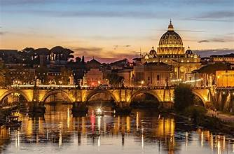
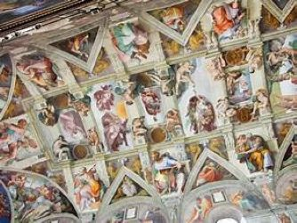
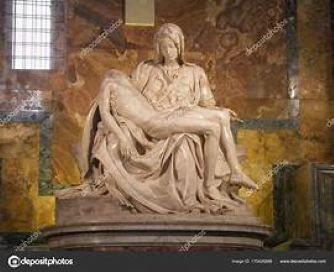

My Italian Vacation
Welcome to my Italian vacation! I would like to share some of my experiences of Rome and Florence. Italy has always been a place I have wanted to visit. The culture is rich. The art is world-renowned. The architecture is focus of many academic programs. And the food is to die for. But what separates a good vacation from a life changing experience is the planning. Today I would like to share all of this with you.

Rome, often called the Eternal City, is a sprawling Mediterranean metropolis that serves as the historic and cultural heart of Italy. As the former seat of the Roman Empire and the current home of the Vatican City, it offers an unparalleled layer-cake of history where ancient ruins like the Colosseum sit alongside Renaissance palazzos and vibrant modern neighborhoods. Whether you're tossing a coin into the Trevi Fountain or navigating the cobblestone streets of Trastevere, the city thrives on a unique blend of monumental grandeur and an effortless, sun-drenched dolce vita lifestyle.
Art

While "Roman art" typically refers to the mosaics, frescoes, and realistic portrait sculpture of the ancient Empire, the Pietà is the crown jewel of the Roman Renaissance. Housed in St. Peter's Basilica, this 1499 masterpiece by Michelangelo Buonarroti remains one of the most influential works in art history.
